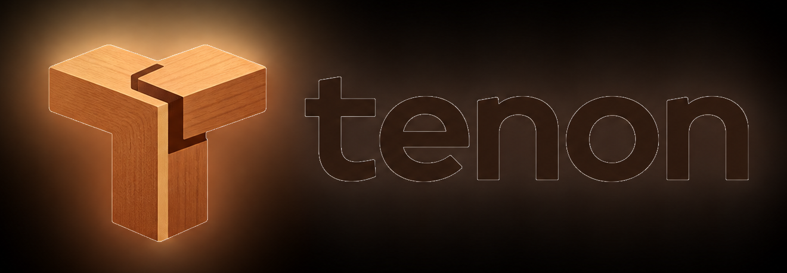

Tenon makes small, precise tools for macOS. Quiet structure, careful details, nothing extra — the pieces simply click into place.Tenon 榫卯做小而精确的 macOS 工具。结构安静，细节认真，不多余——两块木头，刚好合上。
Built for macOS. Designed to stay out of the way.为 macOS 而做。 尽量不打扰。
01Menu bar utility菜单栏效率工具macOS 12+
Flip
Every switch you reach for, in one quiet panel.每天要用的 macOS 开关，收进一个安静的面板。
Low power, dark mode, keep awake, cleanup, Focus, custom scripts — a small control room for the Mac, always one shortcut away.低电量、深色模式、保持唤醒、清理、专注、自定义脚本——一个随时叫得出的 Mac 控制台。
Turn any window or screen region into a real-time floating mirror. Keep a reference, a chat, or a live feed above your work — with click-through and a browser extension.把任意窗口或屏幕区域变成实时悬浮镜像。参考资料、聊天、直播画面都能浮在工作上方，支持点击穿透和浏览器扩展。
A small joint. A quiet kind of software.一个小小的榫。 一种安静的软件。

The Tenon mark / 榫卯
A tenon is the small joint that lets two pieces of wood hold together without a nail. No noise, no excess — just a precise fit.榫，是让两块木头不用钉子也能咬合的小结构。没有噪音，没有多余——只是刚好合上。
Tenon is an independent studio for Mac software, founded by Tao Wang. Every app starts with the same question: does this piece need to exist? If it does, it should fit perfectly.Tenon 榫卯是一间独立 Mac 软件工作室，由 Tao Wang 创办。每款 App 都从同一个问题开始：这个零件真的需要存在吗？如果需要，它就应该严丝合缝。
Tao Wang ·founder & developer创始人 / 开发者
01
Precise精确
Measure twice. Ship once.量两次，做一次。
02
Quiet安静
Tools that stay out of the way.不抢注意力，只在该出现时出现。
03
Useful有用
Every switch earns its place.每个开关，都有存在的理由。
On the bench工作台上
More pieces are being fitted.还有更多零件， 正在合上。
New tools will arrive when they are ready. In the meantime, follow the work on GitHub.新的工具会在准备好之后出现。在那之前，可以在 GitHub 看到正在做的事。